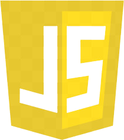
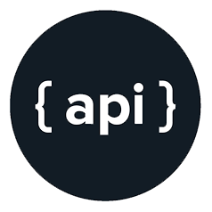

bio
Hi! My name is Leon, and I'm a full-stack web developer.
I find myself most proud when I am able to solve a challenging problem. I am confident knowing that I can look at a question from all sides and execute the best solution.
My experience with HTML, CSS, and coding goes back many years. In the past, I was the designer and administrator of small, hobby websites, and taught myself how to manage a community and all its coding needs (through trial-and-error, of course). I crafted many programs using a C-type language, and taught myself C++ as well. Now, I am exploring every avenue of JavaScript to further my abilities as a web developer.
My biggest passions are designing and creating games; I am always extremely eager to piece together board games, pen and paper games, and internet games alike and test my creativity. Another outlet for my creativity is writing stories!
- 
- 